Литература
Папиросы становятся знаком достатка. У Твардовского: «Я б не стал курить махорку, // А достал бы я „Казбек“».
ИсточникХроника одной привычки · 1920–2026
Как страна жила с папиросой в руке, почему это считалось нормой и как закон 2013–2014 годов изменил то, что казалось неизменным.
Листайте вниз: рисунок на фоне меняется вместе с историей
С середины 1970-х до середины 2000-х курили около 60% мужчин страны.
В 2024 году, по данным Росстата, таких 32,3%.
Shkolnikov и др., BMC Public Health, 2020 · Росстат, 2024, по Т—Ж
Между этими цифрами лежат фронтовой паёк, талоны на сигареты, ларьки и один федеральный закон. Начнём с плакатов.
Пролог · 1920-е
Историк Триша Старкс пишет, что в 1920 году Советская Россия первой в мире задумала общенациональную программу по сокращению производства, продажи и употребления табака.
В те же годы государственные тресты заказывали яркие плакаты папирос. К 1922 году папиросы составляли 80% переработанного табака в стране. Старкс называет СССР первым массовым курящим обществом, которое государство одновременно поддерживало и пыталось остановить.
Отрывок из книги Starks в The Moscow Times · Cigarettes and Soviets, 2022
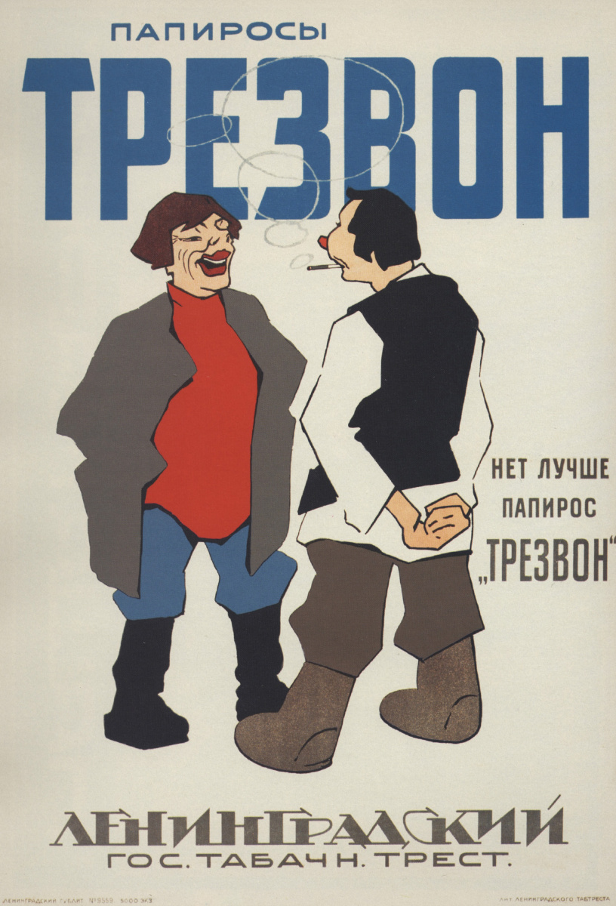
Архивный документ, 1925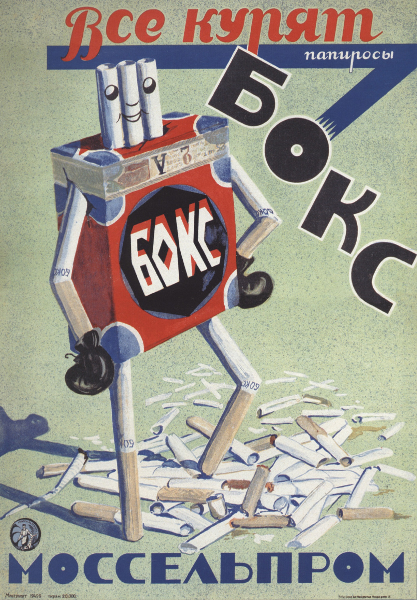
Архивный документ, 1928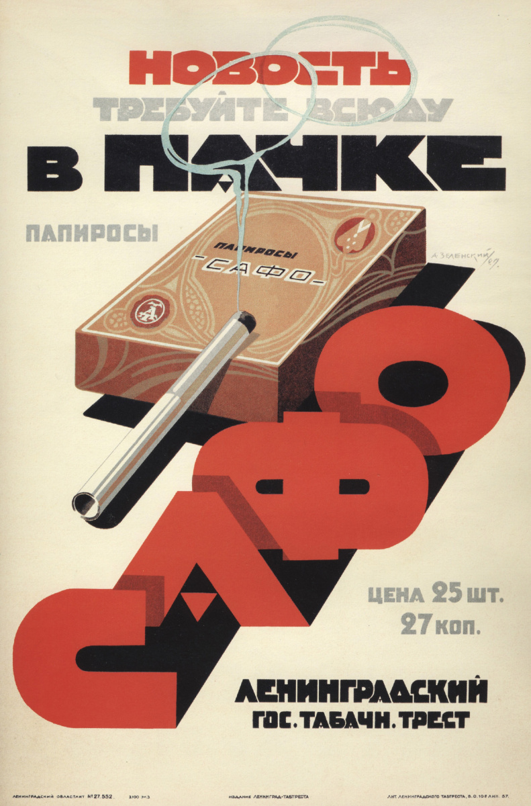
Архивный документ, 1929Плакаты показаны как документы эпохи. Курение вредит здоровью.
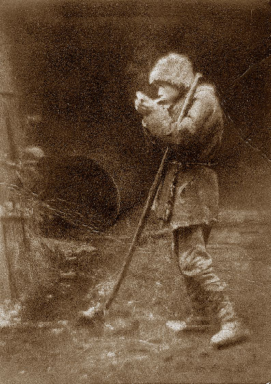
Глава 1 · 1941–1945
Табак стал снабжением, как хлеб и сахар. Привычка уходила на фронт вместе с человеком и вместе с ним возвращалась домой. В 1945 году, пишет «Коммерсантъ», по приказу Сталина построили Краснодарскую табачную фабрику: снабжать армию махоркой.
Самая известная песня об этом написана на Южном фронте в 1941 году. Называется «Давай закурим», музыка Модеста Табачникова (это настоящая фамилия), стихи Ильи Френкеля. В январе 1942-го стихи напечатала «Комсомольская правда», позже песню пела Клавдия Шульженко.
Глава 2 · 1950–1960-е
Собирательный образ. Такого человека не было, но таких людей было очень много.
Москва, 1958 год. Николаю Петровичу сорок лет, он мастер на заводе, в войну служил связистом. Курить начал на фронте, как и половина его цеха.
День начинается на кухне: форточка, первая папироса натощак и кашель, который он давно не замечает. В кармане «Беломор», двадцать пять штук в пачке, дешёвый, самый массовый в стране. Для начальства и особых случаев есть «Казбек» со всадником на коробке.
На заводе перекур считается частью смены. В курилке решают то, что не решили на планёрке. Вечером он курит на лестничной клетке с соседом и потом дома у окна. Сын видит его с папиросой каждый день и думает, что так выглядит взрослый мужчина.
Никто не называет это проблемой. Пепельница стоит в кабинете, в купе, в гостях. Врач скажет, что лучше бы поменьше, и на этом разговор закончится. Одышка на лестнице начнётся лет через двадцать, и связывать её с папиросой он не станет.
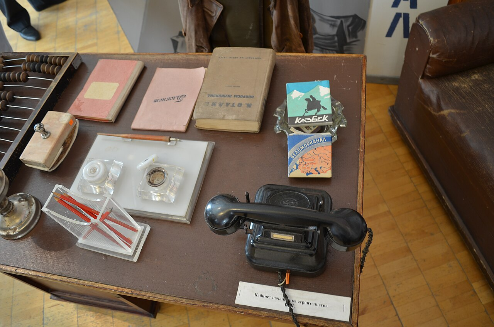
Марку «Беломорканал» создали в 1932 году на ленинградской фабрике имени Урицкого. Канал, в честь которого её назвали, строили заключённые. Самым известным курильщиком страны был Сталин с трубкой. По распространённой версии, он набивал её табаком из папирос «Герцеговина Флор», но первичных документов об этом мы не нашли.
БСЭ, «Табачная промышленность» · «Беломорканал» · «Герцеговина Флор»
«Поэтому мы заключаем, что курение является фактором, причём важным, в возникновении рака лёгкого».
Ричард Долл и Остин Брэдфорд Хилл, British Medical Journal, 30 сентября 1950. Перевод наш. Оригинал статьи
В 1954 году те же авторы показали более высокую смертность у курящих врачей. В январе 1964-го главный санитарный врач США Лютер Терри выпустил доклад: разобрано больше 7000 статей, курение названо причиной рака лёгкого. В советской заводской курилке эти журналы никто не читал.
Как это отражалось в жизни
После 1920-х брендовой рекламы табака в СССР почти не осталось: исследователи называют её несуществующей. Старкс пишет, что курение в стране росло «без массового производства и интенсивной рекламы». Его поддерживали паёк, быт, песни и экран.
Папиросы становятся знаком достатка. У Твардовского: «Я б не стал курить махорку, // А достал бы я „Казбек“».
ИсточникВ «Ну, погоди!» Волк курит папиросы. У крокодила Гены в зубах трубка, хотя затянуться его так и не показали. В 2012 году это стало новостью.
ИнтерфаксПараллельно шла антитабачная агитация. В книге Старкс есть плакат 1968 года, где лозунг Маяковского 1920-х о ядовитости никотина обращён к новому поколению курильщиков.
The Moscow TimesВ 1989 году у группы «Кино» выходит песня «Пачка сигарет». Весь альбом сначала хотели назвать так же. Написана она в Алма-Ате, где Виктор Цой снимался в «Игле».
ИсточникДаём ссылки, а не кадры: эти фильмы охраняются авторским правом. В них могут быть сцены курения. Курение вредит здоровью.
Что именно есть в кадре, мы знаем из описаний: Коммерсантъ, 2024 · Рамблер
Глава 3 · 1970–1980-е
Shkolnikov и др., 2020. Эти опросы проводили не по всей стране, а в отдельных городах.
Собирательный образ. Ленинград, 1979 год.
Виктору тридцать четыре, он инженер в НИИ. Лестничная площадка между этажами служит ему клубом. Там узнают новости, спорят о футболе и занимают до зарплаты. Сигарету можно стрельнуть у любого, это даже просьбой не считается.
Удачей считаются болгарские: производство сигарет в Болгарии за 1960–1975 годы выросло с 10 до 71,4 млрд штук. Отечественные пропадают из киосков всё чаще. Жена Виктора курит только на работе и в гостях, дома при детях стесняется. На торце пачки теперь есть мелкая надпись от Минздрава, её никто не читает.
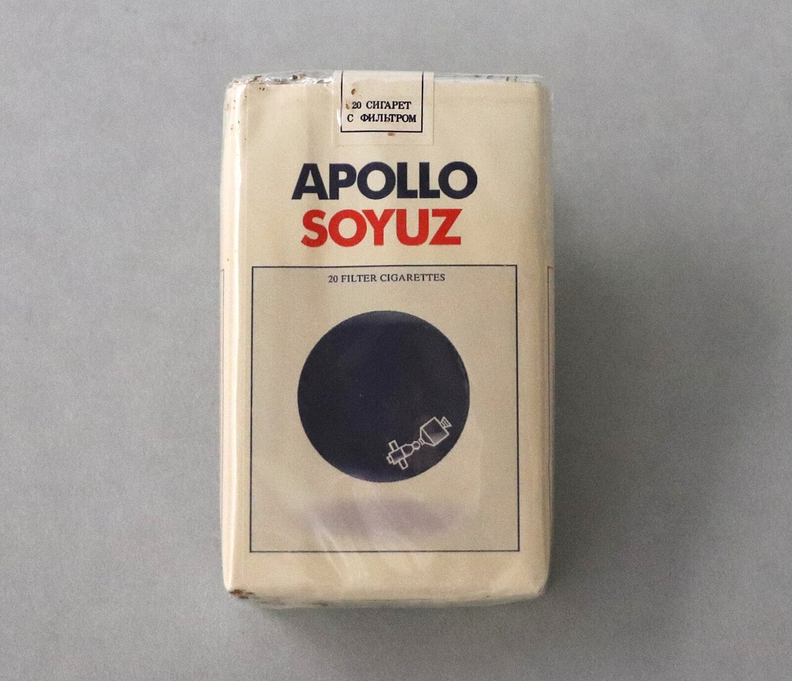
В 1975 году фабрика «Ява» вместе с Philip Morris выпустила сигареты в честь стыковки кораблей «Союз» и «Аполлон». Их делали примерно до 1980 года. Старкс считает, что с этого началось партнёрство советской отрасли с американской компанией.
«Ровно сорок лет назад Минздрав стал робко предупреждать, что курение вредит здоровью: появились маленькие надписи на торце сигаретной пачки».
ИсточникС датой источники спорят: одни пишут про 1978 год, другие про 1985-й. Приказ Минздрава СССР найти не удалось.
«Мало кто помнит, что первая попытка искоренить курение в кино была предпринята отнюдь не в Голливуде, а в Советском Союзе в конце 1970-х годов».
ИсточникСам рынок при этом уже трещал. В конце 1969 года в ЦК КПСС ушла записка: на 1970-й нужно не меньше 370 млрд штук, а ресурсов 345,2 млрд. Торговля табаком в РСФСР повсеместно шла с перебоями.
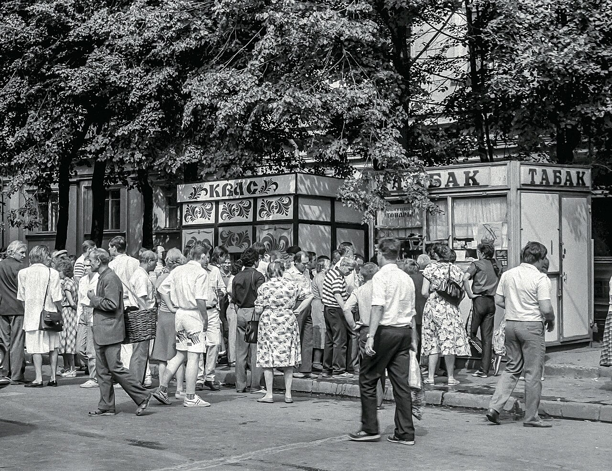
Лето 1990 года
26 июля 1990 года в Перми в табачном магазине в центре города закончился товар. Очередь перекрыла улицу, остановила трамваи и двинулась к горисполкому. Это назвали табачным бунтом.
«„Нет табака — нет работы!“ — кричали разъярённые рабочие в Куйбышеве, готовые скорее бастовать, чем переходить на что-то другое. В уральской Перми толпы, изнывающие без никотина, перекрыли главную улицу».
ИсточникВласти называли поломки на фабриках, спекулянтов и сокращение импорта из Болгарии. Популярное объяснение другое: около половины фабрик РСФСР одновременно встали на переоборудование, но точное число источники дают разное. В Москве ввели нормы, TIME пишет про пять пачек в месяц. В сентябре Philip Morris и R. J. Reynolds договорились поставить в СССР больше 20 и 14 млрд сигарет.
Коммерсантъ-Прикамье · Москвич Mag, 2020
Глава 4 · 1990-е
После распада СССР международные табачные компании стали покупать советские фабрики. В октябре 1994 года BAT получила контрольный пакет «Явы». Примерно тогда же Philip Morris пришёл в Краснодар, а R. J. Reynolds вложился в ленинградскую фабрику имени Урицкого.
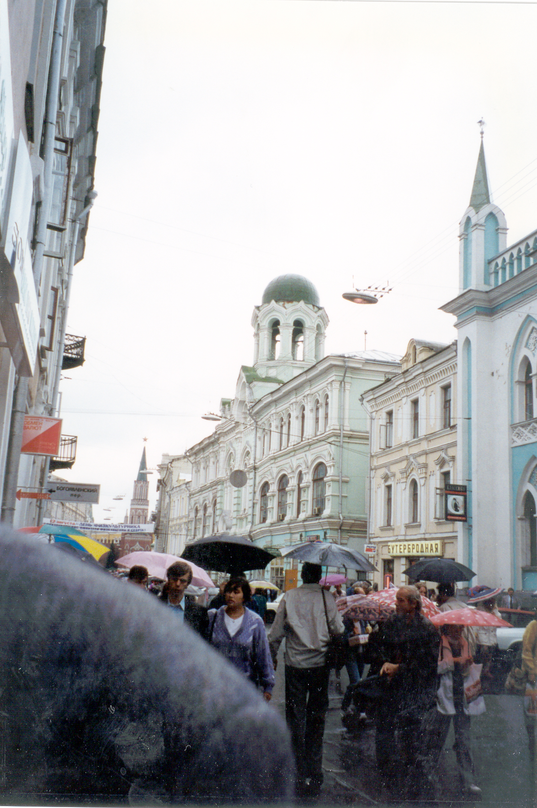
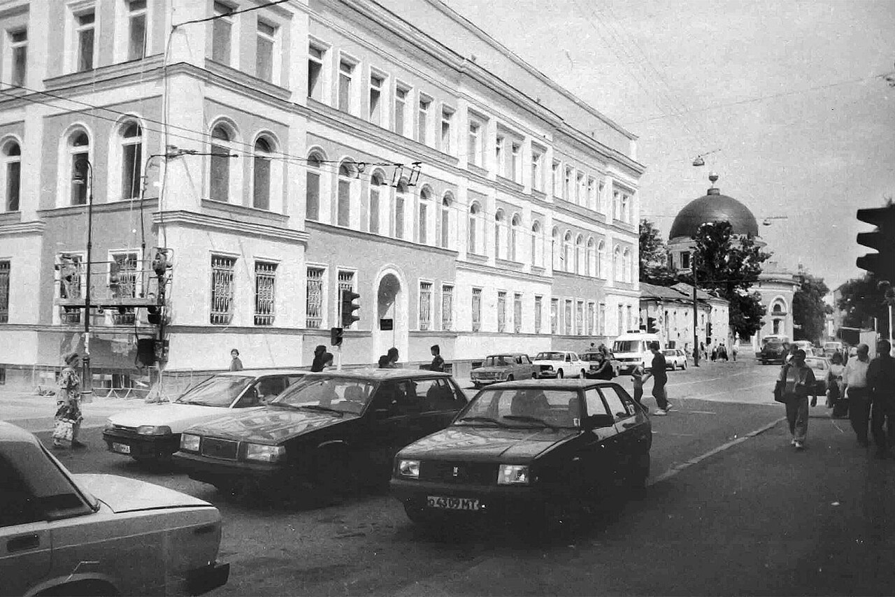
Собирательный образ. Москва, 1997 год.
Лене двадцать три, у неё первая работа в офисе. Сигарета для неё значит примерно то же, что новые джинсы: другая жизнь, которую показывают на щитах вдоль дороги. Ларёк стоит у метро и продаёт поштучно. Её мать в этом возрасте не курила, а бабушка считала это неприличным.
Авторы большого исследования 2007 года считают рост среди женщин прямым следствием прихода этих компаний и их работы с женской аудиторией. Внутренние документы BAT, которые разбирали Гилмор и Макки, показывают: индустрия нацеливалась на молодёжь и женщин.
Закон о рекламе 1995 года, пишут те же исследователи, опирался на добровольный кодекс самой индустрии. От него осталось требование: реклама сопровождается предупреждением, а в эфире на него дают не меньше трёх секунд.
Perlman и др., 2007 · McKee и др., 1998 · Gilmore & McKee, 2004 · № 108-ФЗ, ст. 16
Глава 5 · 2000-е
Первый закон об ограничении курения вышел в 2001 году: продажа только с 18 лет и надпись на 4% площади пачки. Газета St Petersburg Times назвала его хрестоматийным примером лоббистского искусства.
Распоряжение № 1563-р · Халтурина и др., 2021 · GATS 2009/2016 · Salagai и др., 2024
Поворотным стал 2008 год. Россия присоединилась к Рамочной конвенции ВОЗ по борьбе против табака и приняла на себя её обязательства. С этого же времени, показывает работа Школьникова и коллег, начинает снижаться доля курящих мужчин.
Хронология
Закон о рекламе. Реклама табака идёт только с предупреждением о вреде.
№ 87-ФЗ. Продажа с 18 лет, надпись на пачке, первые ограничения курения.
№ 51-ФЗ. Россия присоединяется к конвенции ВОЗ.
Концепция правительства на 2010–2015 годы с целью снизить курение на 10–15%.
Минздравсоцразвития утверждает картинки для пачек, приказ № 490н.
Подписан № 15-ФЗ. В Совете Федерации за него проголосовали 125 сенаторов, 4 против, 6 воздержались.
Первый этап: школы, больницы, театры, стадионы, госорганы, рабочие места, подъезды, самолёты. Запрет рекламы.
Нельзя выпускать пачки без картинок о последствиях.
Появляются штрафы, для граждан от 500 до 1500 ₽.
Второй этап: кафе, рестораны, поезда, гостиницы, рынки. Сигареты убирают с витрин и из киосков.
Запрет слов «лёгкие» и «мягкие», картинка на половину пачки.
№ 303-ФЗ. Вейпы приравнены к табаку в запретах.
№ 178-ФЗ. Вейпы нельзя продавать несовершеннолетним.
№ 186-ФЗ. С 1 марта 2027 года регионы смогут в порядке эксперимента запрещать продажу вейпов.
Глава 6 · 2013
Федеральный закон № 15-ФЗ «Об охране здоровья граждан от воздействия окружающего табачного дыма и последствий потребления табака» подписан 23 февраля 2013 года. Страна встретила его без восторга.
ВЦИОМ, февраль 2013, 1600 опрошенных
Посмотрите на рисунок: на теле появляются первые лепестки.
«Не успел выкурить утреннюю сигарету у себя дома, а по дороге к метро нет ни одного большого магазина, чтобы купить вожделенную пачку, — что ж, терпи до вечера».
Источник«По их подсчетам, когда вступят в силу все запретительные меры, 44 миллиона курящих россиян 15-17 раз в день будут являться правонарушителями».
Источник«По данным экспертов, Россия теряет от 100 до 200 тысяч человеческих жизней, и это, конечно, большая цена».
ИсточникСпор о кино начался ещё до антитабачного закона. В 2012 году «Интерфакс» вышел с заголовком «Крокодил Гена и Волк бросают курить»: со ссылкой на анонимный источник сообщалось, что сцены могут вырезать. Руководство компании этого не подтвердило, решения в статье нет.
«Все-таки в данном случае Волк — отрицательный герой. Надо, наоборот, его показывать и даже увеличить кратность. Не надо вокруг Волка делать погоду».
ИсточникЗакон 2013 года сохранил старую формулу: в новых фильмах для взрослых курить в кадре нельзя, если это не «неотъемлемая часть художественного замысла». В фильмах для детей такой оговорки нет. При показе фильмов со сценами курения вещатель обязан дать социальную рекламу о вреде.
1 июня 2014 года
Второй этап касался всех: кафе и рестораны, поезда дальнего следования, гостиницы, рынки. Киоски больше не могли продавать сигареты, пачки исчезли с витрин.
«С воскресенья, 1 июня, курить в России можно только под открытым небом». «Однако, как известно, строгость наших законов часто искупается необязательностью их исполнения».
Источник«Крупнейшие ретейлеры, как выяснил РБК, уже приступили к демонтажу оборудования, предназначенного для продажи табака».
Источник«Но накануне планируем устроить масштабную „дымную“ вечеринку, чтобы, как перед введением „сухого закона“ в Америке, отпраздновать вступление в силу запрета на курение».
Источник«Продавщицы, уставшие отвечать на один и тот же вопрос, теперь просто показывают на таблички „Сигарет нет“».
Источник«В кафе-баре Rocks РИА Новости сообщили, что в воскресенье количество посетителей уменьшилось почти вдвое». В Красноярске при этом: «запрет на курение пока никак не отразился на числе посетителей».
Источник«После вступления в силу антитабачного закона число курильщиков в стране снизилось на 7,5 млн человек, рапортует Минздрав». Представитель отрасли возразил: «Делать заявления на основании опроса ВЦИОМ о реальном снижении числа курильщиков ‒ это, мягко говоря, необъективно».
ИсточникЦитаты приведены как обзор печати: отрывок, издание и дата, ссылка на оригинал.
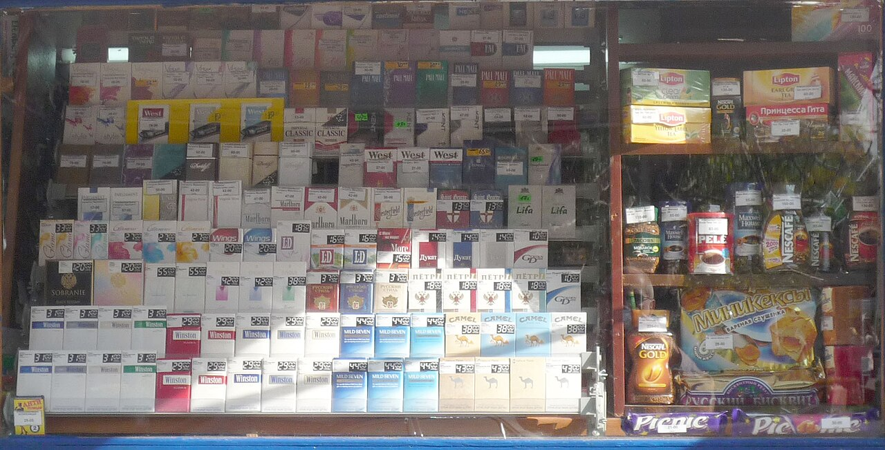
20092020Киоск в Волгограде, 2009. Фото michael clarke stuff, CC BY-SA 2.0. Белые контейнеры в московском супермаркете, 2020. Фото Stolbovsky, CC BY-SA 3.0. Марки на снимке 2009 года размыты намеренно. Фото показаны как документы. Курение вредит здоровью.
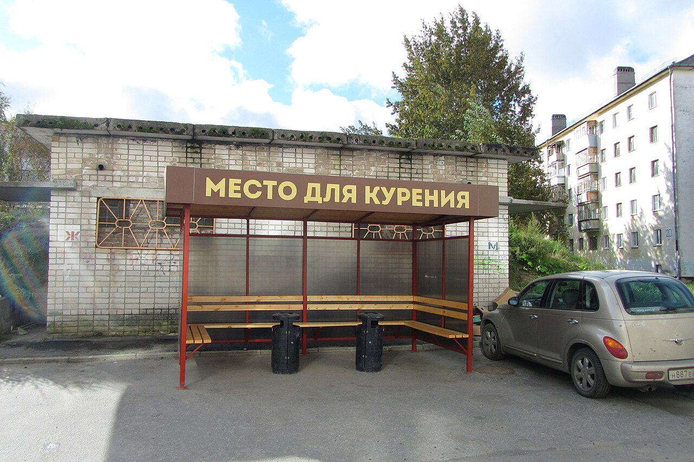
Опрос GATS сравнил 60 регионов в 2009 и 2016 годах. Доля потребляющих табак упала с 39,4 до 30,9%. С дымом в ресторанах стали сталкиваться в четыре раза реже, рекламу замечать втрое реже, а пачка подорожала больше чем в три раза.
GATS Comparison Fact Sheet, CDC/ВОЗ
Есть три оговорки. Опрос не доказывает, что всё сделал один закон: одновременно менялись цены, реклама и запреты. Школьников и соавторы относят начало снижения к 2008 году, до закона. У женщин картина неровная: молодые стали курить реже, а в среднем возрасте доля курящих выросла, особенно среди женщин с минимальным образованием.
Общество тоже приняло закон не целиком. В октябре 2014 года две трети опрошенных Левада-центром хотели ограничить курение в ресторанах, а не запретить полностью. 69% сказали, что на их жизни запреты никак не отразились. Табачные компании говорили о росте контрабанды: Euromonitor оценил его в 40%, до 3,3% рынка.
Глава 7 · Сегодня
Собирательный образ. Москва, 2026 год.
Даше двадцать восемь. Пепельницу на столике кафе она последний раз видела школьницей. В поезде дымом не пахнет уже двенадцать лет. Сигарет в магазине она не видит вовсе: только белая коробка с надписью «Табак». Отца с папиросой на балконе она помнит, а её дети, скорее всего, такого не увидят.
Курильщик теперь выходит на улицу и чувствует, что это его личное дело. Часть знакомых Даши перешла на вейпы и уверена, что это не в счёт. Среди взрослых ими пользуются 9%, чаще всего молодые жители больших городов. Полувековых наблюдений, как у сигарет, у этой привычки пока нет.
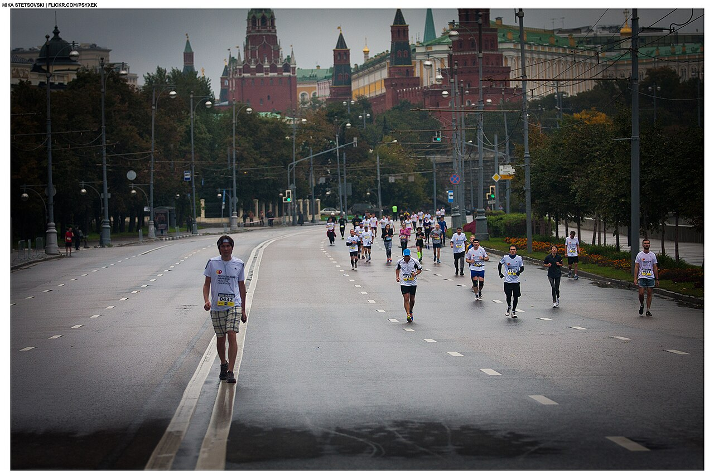
Мужчины 61
Женщины 22
GATS 2009, возраст 15+
Данные собраны разными способами, поэтому линии разорваны: сравнивать их точка в точку нельзя. Наведите курсор или нажмите на график.
| Год | Источник | Мужчины, % | Женщины, % |
|---|
RLMS 1992–2003: Perlman, 2007 · RLMS 2004–2016 и LRC/MONICA: Shkolnikov, 2020 · GATS · Росстат, по Т—Ж
Ведомости, 31.05.2025 · Т—Ж, 10.07.2025. Цель Минздрава: 16% к 2030 году.
| Показатель | Тогда | Сейчас |
|---|---|---|
| Мужчины | ≈60% (1970–2000-е) | 32,3% (2024) |
| Женщины | 18,4% (1985) | 7,7% (2024) |
| Подростки 13–15 лет, табак | 27,3% (2004) | 11,0% (2021) |
| Подростки, дым дома | 76,4% (2004) | 23,1% (2021) |
| Подростки, электронные сигареты | нет данных | 16,7% (2021) |
Источники и методики разные, сравнение примерное. Salagai и др., Терапевтический архив, 2024. Авторы связаны с Минздравом.
В 2020 году вейпы приравняли к табаку в запретах, в 2023-м их запретили продавать несовершеннолетним. В июне 2026 года подписан закон: с 1 марта 2027-го продажа только по лицензии, а регионы смогут запрещать торговлю в порядке эксперимента до 2032 года. Общего запрета в стране на сегодня нет.
Вдох
Всемирная организация здравоохранения, 25.02.2020
Помощь при отказе от курения
8-800-200-0-200 Единая служба Минздрава. Звонок бесплатный, затем наберите 1.